Social
What each story becomes on Instagram, Facebook, X and WhatsApp: a four-slide carousel and a post written for each platform. Scroll the slides sideways.
New Music Friday


Morning Manna
WhatsApp
*Morning Manna* · Thursday 15 October Good morning, blessed family of Sweet Melodies 94.3 FM, here are your top morning stories for this Thursday. _“Bless the LORD, O my soul, and forget not all his benefits: Who forgiveth all thine iniquities; who healeth all thy diseases;”_ — Psalms 103:2-3 1. *Salvation Ministries Begins Ghana Miracle Crusade 2026* Salvation Ministries has officially launched its 2026 Ghana Miracle Crusade, bringing powerful teaching and worship to Accra. https://colabourers58-hue.github.io/sweet-melodies-news/story/salvation-ministries-begins-ghana-miracle-crusade-2026/ 2. *Minister Theophilus Sunday Holds Tarry Nyanya 2026 Day 1* Minister Theophilus Sunday hosted Day One of Tarry Nyanya 2026, preparing believers through intense prayer and worship. https://colabourers58-hue.github.io/sweet-melodies-news/story/minister-theophilus-sunday-holds-tarry-nyanya-2026-day-1/ 3. *Archaeologists find world's oldest shipwreck off Turkish coast* Archaeologists have discovered the world's oldest shipwreck off the Turkish coast, shedding light on ancient Mediterranean trade. https://colabourers58-hue.github.io/sweet-melodies-news/story/archaeologists-find-worlds-oldest-shipwreck-off-turkish-coast/ 4. *Black Queens Name Lineup For Olympic Qualifier Against Mauritius* Ghana's Black Queens have announced their starting lineup for the crucial Olympic qualifier against Mauritius at Essipong. https://colabourers58-hue.github.io/sweet-melodies-news/story/black-queens-name-lineup-for-olympic-qualifier-against-mauritius/ 5. *Pope Leo XIV recovers in hospital after successful lung cancer surgery* Pope Leo XIV is recovering well in the hospital following a successful lung cancer surgery. https://colabourers58-hue.github.io/sweet-melodies-news/story/pope-leo-xiv-recovers-in-hospital-after-successful-lung-cancer-surgery/ Listen live: Sweet Melodies 94.3 FM
gospel-top-10


Salvation Ministries Begins Ghana Miracle Crusade 2026
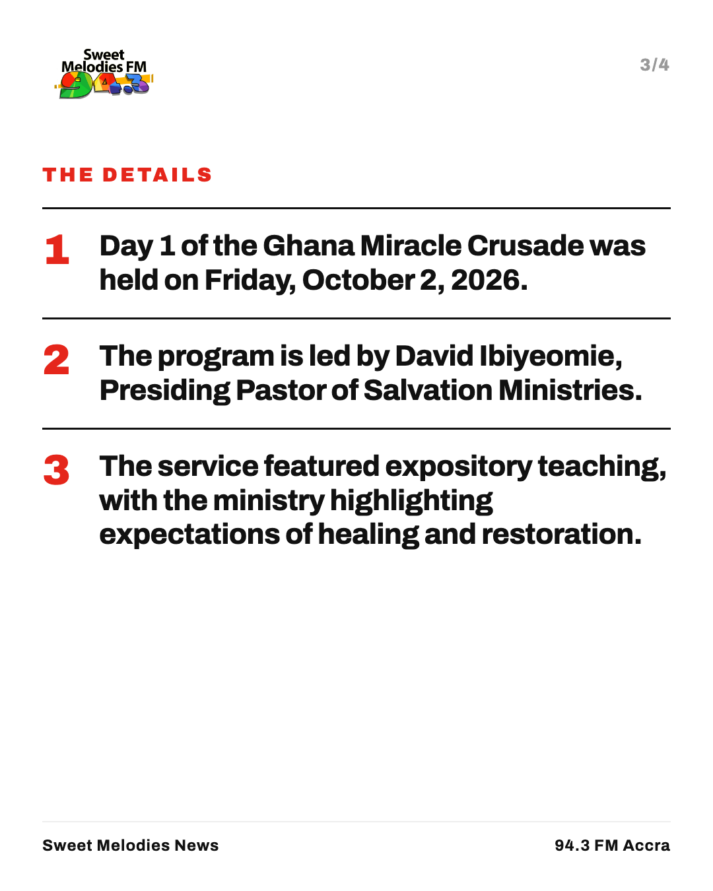

X
Salvation Ministries held Day 1 of its Ghana Miracle Crusade on Oct 2, 2026, featuring teaching by Pastor David Ibiyeomie. https://colabourers58-hue.github.io/sweet-melodies-news/story/salvation-ministries-begins-ghana-miracle-crusade-2026/
Instagram
Salvation Ministries launched Day 1 of the Ghana Miracle Crusade on Friday, October 2, 2026, with Presiding Pastor David Ibiyeomie leading the service.
Facebook
Salvation Ministries has held Day 1 of the Ghana Miracle Crusade on Friday, October 2, 2026. Presiding Pastor David Ibiyeomie delivered an expository teaching during the service. Watch the full broadcast below. https://colabourers58-hue.github.io/sweet-melodies-news/story/salvation-ministries-begins-ghana-miracle-crusade-2026/
Whatsapp
*Salvation Ministries Begins Ghana Miracle Crusade 2026* Day 1 of the crusade was held on Friday, October 2, led by Pastor David Ibiyeomie. Watch the full service here: https://colabourers58-hue.github.io/sweet-melodies-news/story/salvation-ministries-begins-ghana-miracle-crusade-2026/
Minister Theophilus Sunday Holds Tarry Nyanya 2026 Day 1
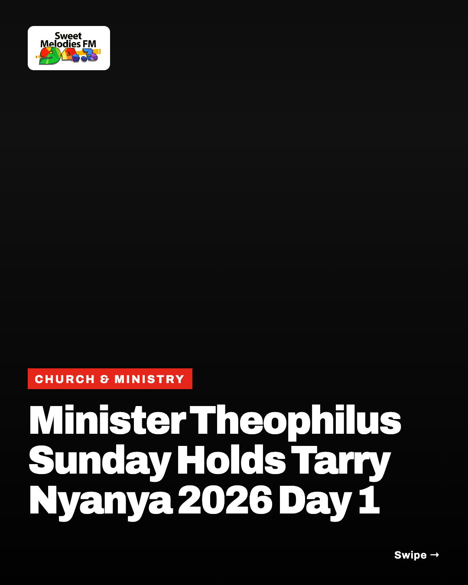
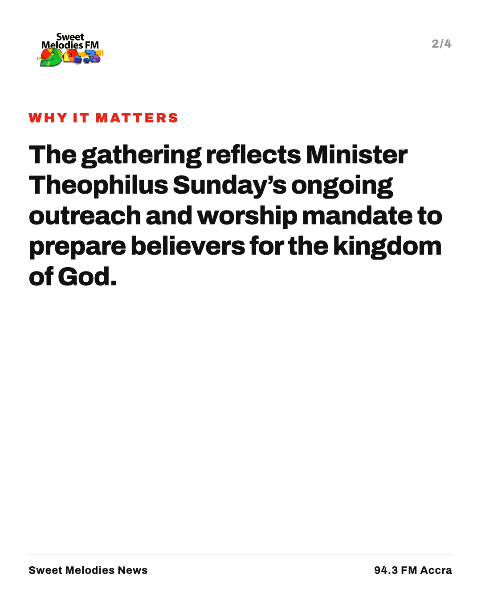
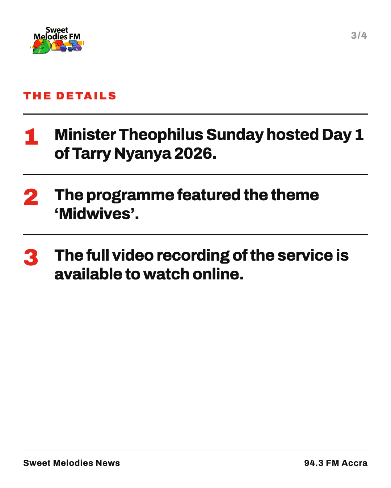

X
Minister Theophilus Sunday has held Day 1 of Tarry Nyanya 2026 under the theme 'Midwives'. Watch the full session now. https://colabourers58-hue.github.io/sweet-melodies-news/story/minister-theophilus-sunday-holds-tarry-nyanya-2026-day-1/
Instagram
Minister Theophilus Sunday has hosted Day 1 of Tarry Nyanya 2026, themed 'Midwives.' Watch the full recording online. #SweetMelodiesFM #TheophilusSunday #TarryNyanya2026
Facebook
Gospel minister Theophilus Sunday has held Day 1 of Tarry Nyanya 2026, focused on the theme 'Midwives.' You can catch up on the full programme online. https://colabourers58-hue.github.io/sweet-melodies-news/story/minister-theophilus-sunday-holds-tarry-nyanya-2026-day-1/
Whatsapp
*Minister Theophilus Sunday Holds Tarry Nyanya 2026 Day 1*
Gospel minister Theophilus Sunday has hosted Day 1 of Tarry Nyanya 2026, themed 'Midwives.' Watch the full recording below: {https://colabourers58-hue.github.io/sweet-melodies-news/story/minister-theophilus-sunday-holds-tarry-nyanya-2026-day-1/}Pastor Nathaniel Bassey Leads Day 5 of October 2026 Hallelujah Challenge
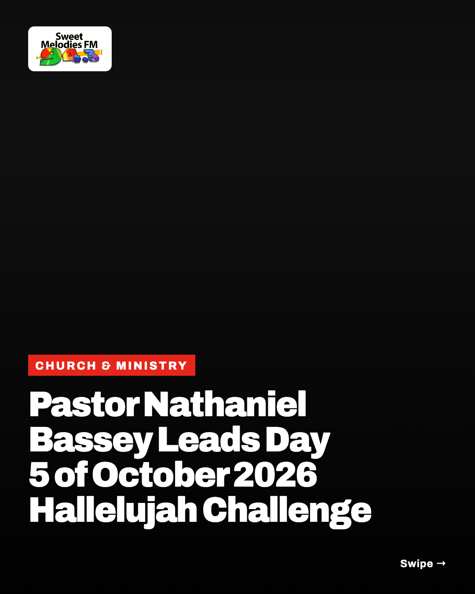
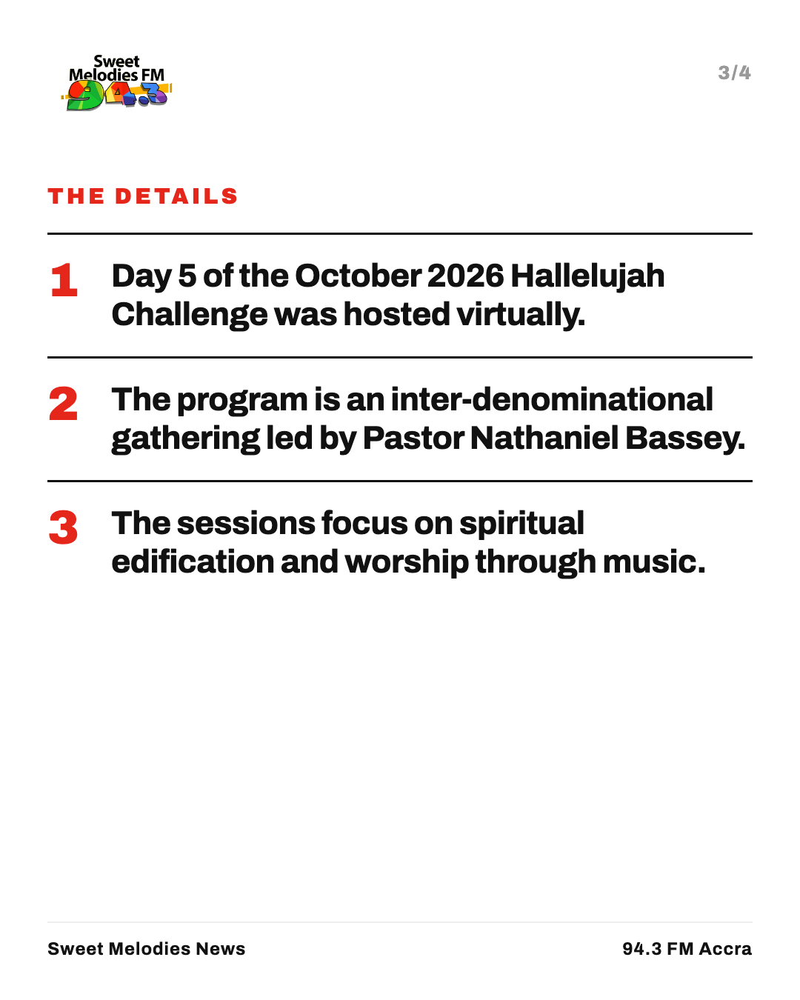

X
Pastor Nathaniel Bassey hosts Day 5 of the October 2026 Hallelujah Challenge virtual worship session. https://colabourers58-hue.github.io/sweet-melodies-news/story/pastor-nathaniel-bassey-leads-day-5-of-october-2026-hallelujah-challen/
Instagram
Pastor Nathaniel Bassey has led Day 5 of the October 2026 Hallelujah Challenge, bringing Christians together virtually for spiritual edification and worship.
Facebook
Pastor Nathaniel Bassey has hosted Day 5 of the October 2026 Hallelujah Challenge, an inter-denominational virtual gathering focused on music and spiritual growth. https://colabourers58-hue.github.io/sweet-melodies-news/story/pastor-nathaniel-bassey-leads-day-5-of-october-2026-hallelujah-challen/
Whatsapp
*Pastor Nathaniel Bassey Leads Day 5 of October 2026 Hallelujah Challenge* {https://colabourers58-hue.github.io/sweet-melodies-news/story/pastor-nathaniel-bassey-leads-day-5-of-october-2026-hallelujah-challen/}Black Queens Name Lineup For Olympic Qualifier Against Mauritius
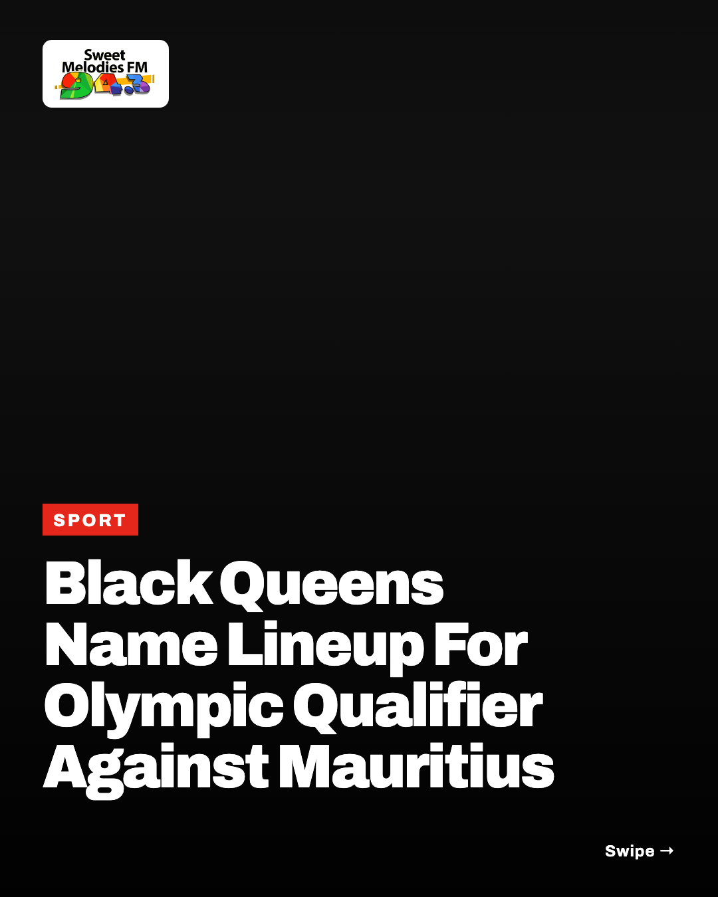
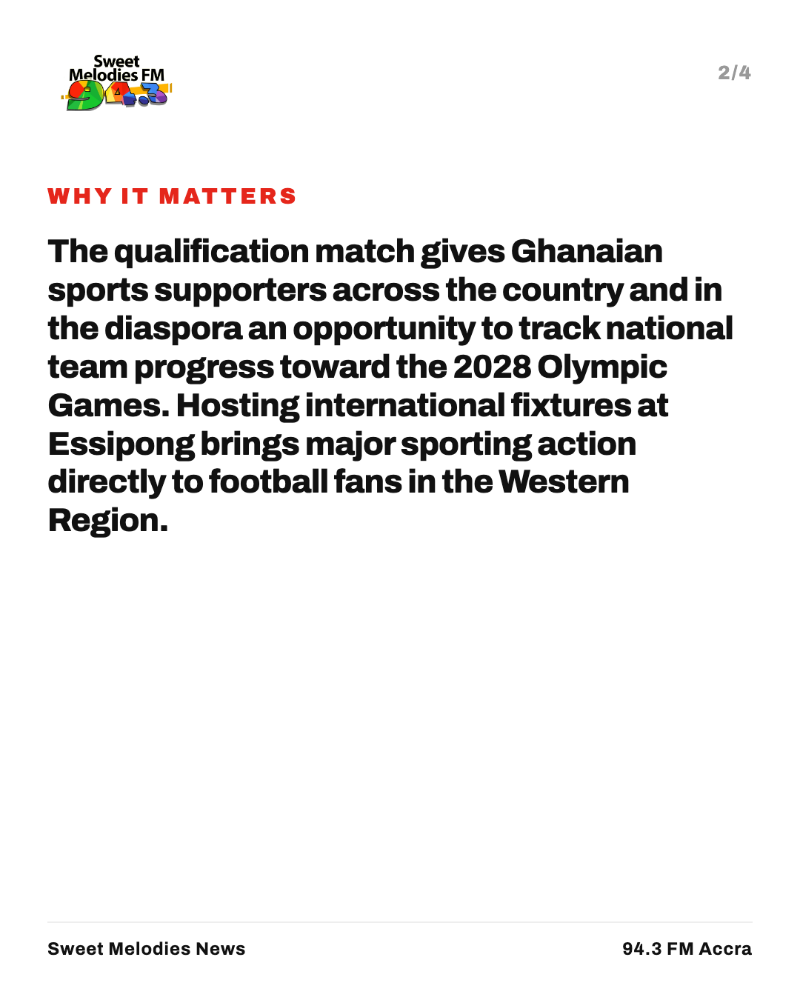
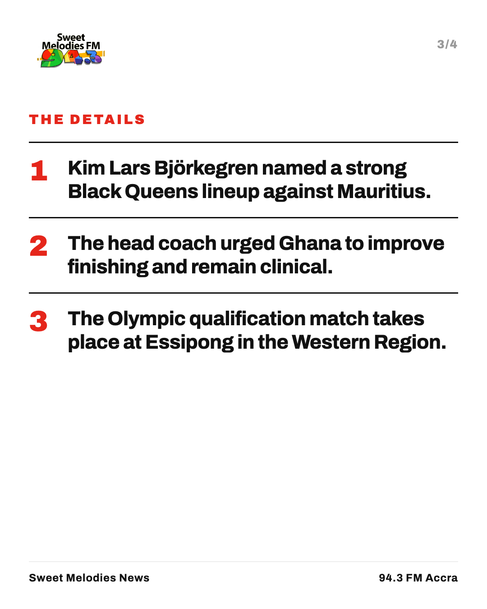

X
Black Queens coach Kim Lars Björkegren names a strong lineup and urges clinical finishing against Mauritius in the LA 2028 Olympic qualifier. https://colabourers58-hue.github.io/sweet-melodies-news/story/black-queens-name-lineup-for-olympic-qualifier-against-mauritius/
Instagram
Black Queens name strong lineup for Olympic qualifier against Mauritius. Coach Kim Lars Björkegren has called for clinical finishing in the LA 2028 qualifying fixture at Essipong. Full story: link in bio #BlackQueens #LA2028 #GhanaFootball #Ghana
Facebook
Black Queens head coach Kim Lars Björkegren has named a strong starting lineup for Ghana's Olympic qualifier against Mauritius. The coach urged the team to improve their finishing and stay clinical at Essipong in the Western Region. Read the full story on our website. https://colabourers58-hue.github.io/sweet-melodies-news/story/black-queens-name-lineup-for-olympic-qualifier-against-mauritius/
Whatsapp
*Black Queens Name Lineup for Mauritius Match* Coach Kim Lars Björkegren urges clinical finishing in LA 2028 Olympic qualifier. https://colabourers58-hue.github.io/sweet-melodies-news/story/black-queens-name-lineup-for-olympic-qualifier-against-mauritius/
Asona Royal Family calls for postponement of Gomoa Wassa Akwambo Festival
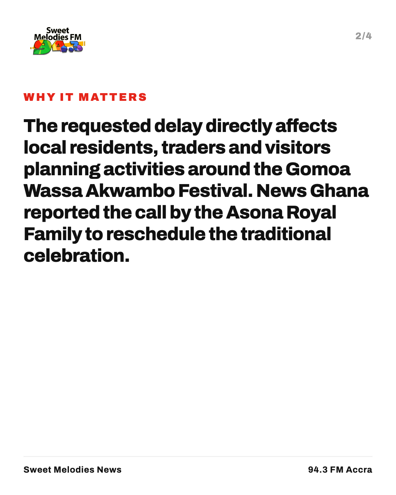
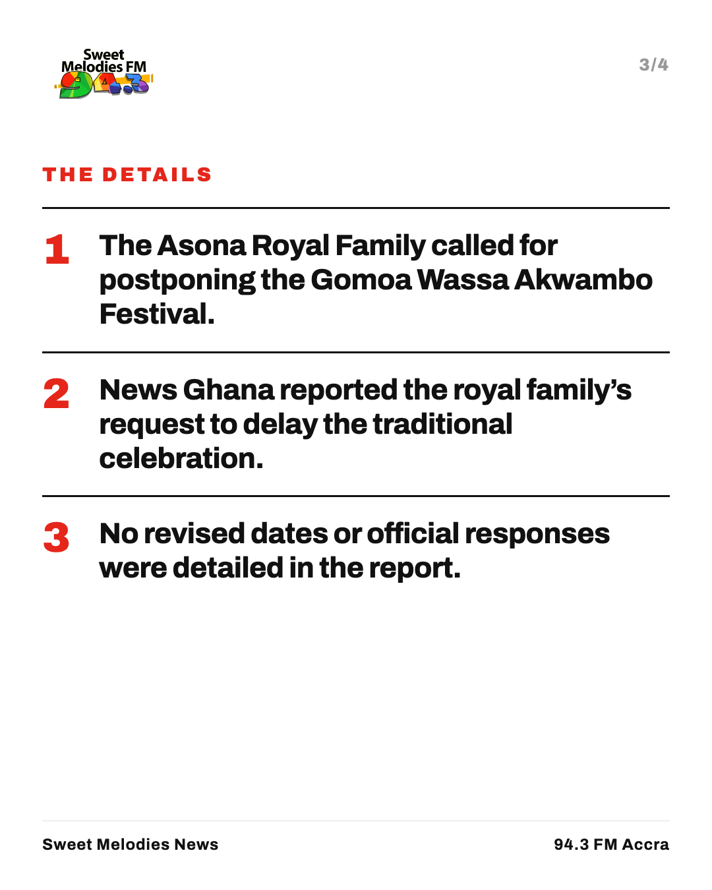

X
The Asona Royal Family has called for the postponement of the Gomoa Wassa Akwambo Festival, News Ghana reports. https://colabourers58-hue.github.io/sweet-melodies-news/story/asona-royal-family-calls-for-postponement-of-gomoa-wassa-akwambo-festi/
Instagram
Asona Royal Family calls for postponement of Gomoa Wassa Akwambo Festival. News Ghana reports that the royal family has requested a delay to the upcoming traditional event. Local residents and traders await further updates on festival schedules. Full story: link in bio #SweetMelodiesFM #GhanaNews #GomoaWassa #AkwamboFestival #NewsGhana
Facebook
The Asona Royal Family has called for the postponement of the Gomoa Wassa Akwambo Festival, according to a report by News Ghana. Local residents, traders and visitors planning to attend the traditional event are awaiting further announcements regarding the schedule. Read the full update on our website. https://colabourers58-hue.github.io/sweet-melodies-news/story/asona-royal-family-calls-for-postponement-of-gomoa-wassa-akwambo-festi/
Whatsapp
*Asona Royal Family Calls for Akwambo Festival Postponement* News Ghana reports the family requested a delay to the Gomoa Wassa traditional event. Read more: https://colabourers58-hue.github.io/sweet-melodies-news/story/asona-royal-family-calls-for-postponement-of-gomoa-wassa-akwambo-festi/
80,000 believers gather for prayer event at Texas stadium
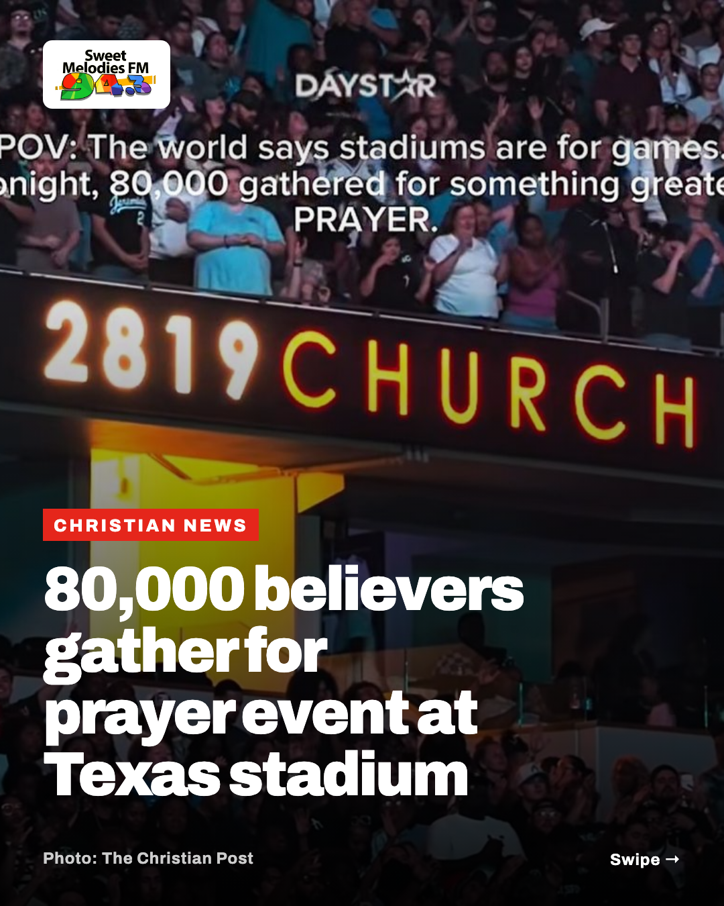
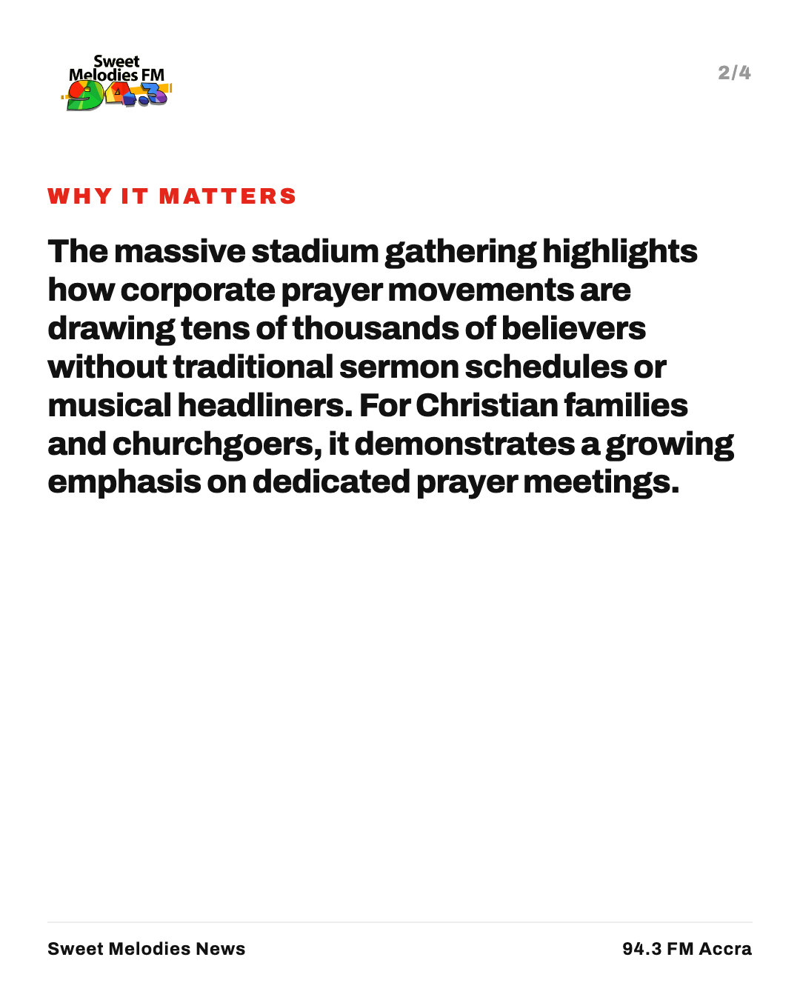
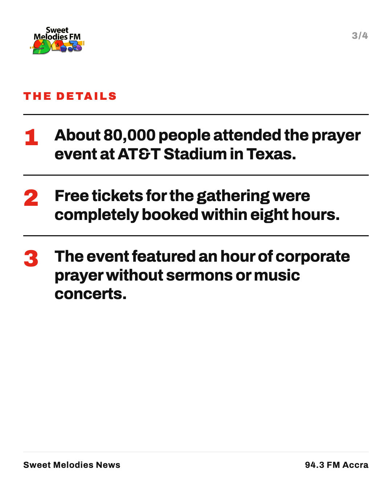

X
An estimated 80,000 believers gathered at AT&T Stadium in Texas for an annual corporate prayer event organised by 2819 Church, according to The Christian Post. Free tickets were fully booked within eight hours. #ChristianNews https://colabourers58-hue.github.io/sweet-melodies-news/story/80000-believers-gather-for-prayer-event-at-texas-stadium/
Instagram
80,000 believers gather for stadium prayer event in Texas. Pastor Philip Anthony Mitchell and 2819 Church filled AT&T Stadium for an hour of unified prayer and worship with no guest speakers or concert lineup. Full story: link in bio #SweetMelodiesFM #ChristianNews #Prayer #Worship #2819Church Photo: The Christian Post.
Facebook
An estimated 80,000 believers gathered at AT&T Stadium in Arlington, Texas, for an annual corporate prayer event led by Pastor Philip Anthony Mitchell. Free tickets for the session were fully booked within eight hours, according to reports. Read the full story on our website. https://colabourers58-hue.github.io/sweet-melodies-news/story/80000-believers-gather-for-prayer-event-at-texas-stadium/
Whatsapp
*80,000 believers gather for stadium prayer event in Texas* 2819 Church filled AT&T Stadium for an hour of unified corporate prayer and worship. Read more: https://colabourers58-hue.github.io/sweet-melodies-news/story/80000-believers-gather-for-prayer-event-at-texas-stadium/
Calvary Chapel settles abuse lawsuit with former staff member for 12 million dollars
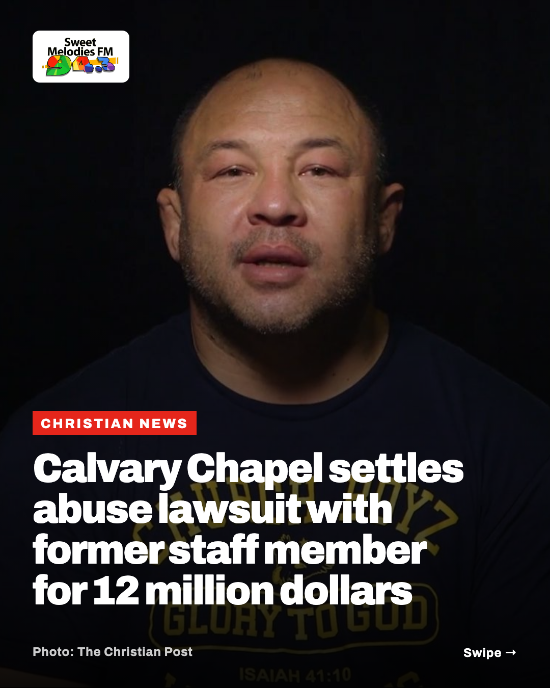
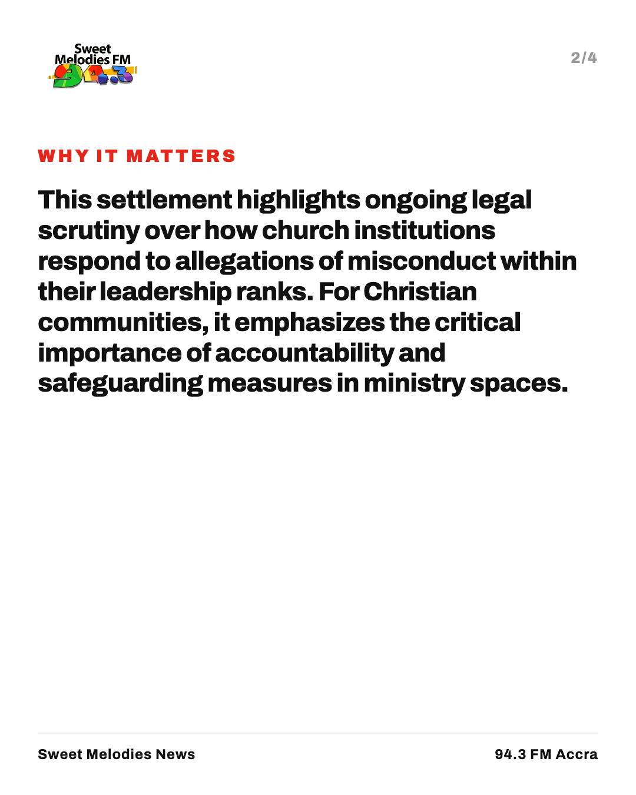
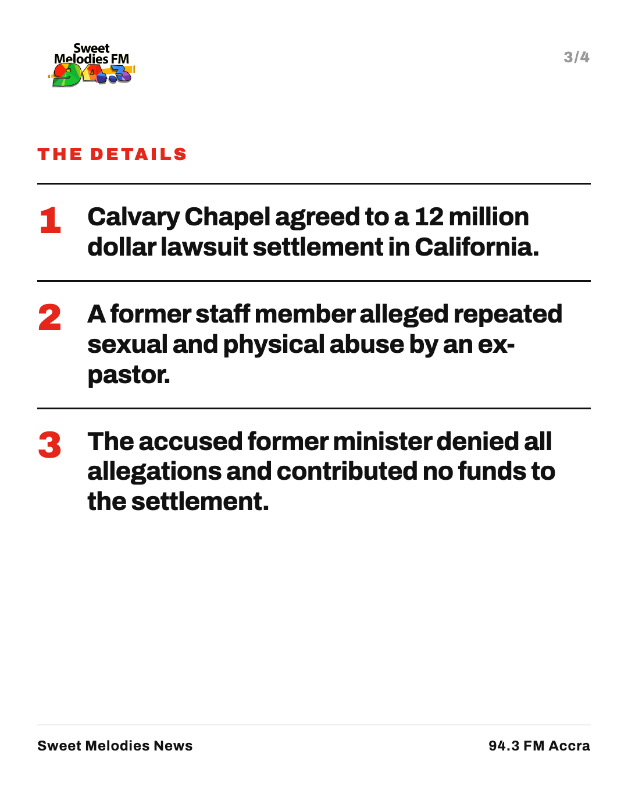

X
California megachurch Calvary Chapel of Costa Mesa agrees to a $12M settlement with a former staff member over allegations involving an ex-pastor. The accused minister denies all claims. https://colabourers58-hue.github.io/sweet-melodies-news/story/calvary-chapel-settles-abuse-lawsuit-with-former-staff-member-for-12-m/
Instagram
Calvary Chapel of Costa Mesa agrees to a $12 million settlement following an abuse lawsuit. A former staff member filed the legal action in California against the church and an ex-pastor. The accused minister denies all allegations and contributed no funds to the settlement. Full story: link in bio #calvarychapel #churchnews #christiannews #justice Photo: The Christian Post.
Facebook
Calvary Chapel of Costa Mesa in California has agreed to pay $12 million to settle a lawsuit brought by a former employee who alleged sexual assault by an ex-pastor. The church expressed gratitude for reaching a resolution, while the former minister continues to deny all claims against him. Read the complete story on our website. https://colabourers58-hue.github.io/sweet-melodies-news/story/calvary-chapel-settles-abuse-lawsuit-with-former-staff-member-for-12-m/
Whatsapp
*Calvary Chapel Settles Lawsuit for $12 Million* A California megachurch has agreed to a payout over abuse allegations against a former pastor. The accused minister denies all claims and contributed no money to the settlement. https://colabourers58-hue.github.io/sweet-melodies-news/story/calvary-chapel-settles-abuse-lawsuit-with-former-staff-member-for-12-m/
Arkansas church choir sings Backstreet Boys song during worship service
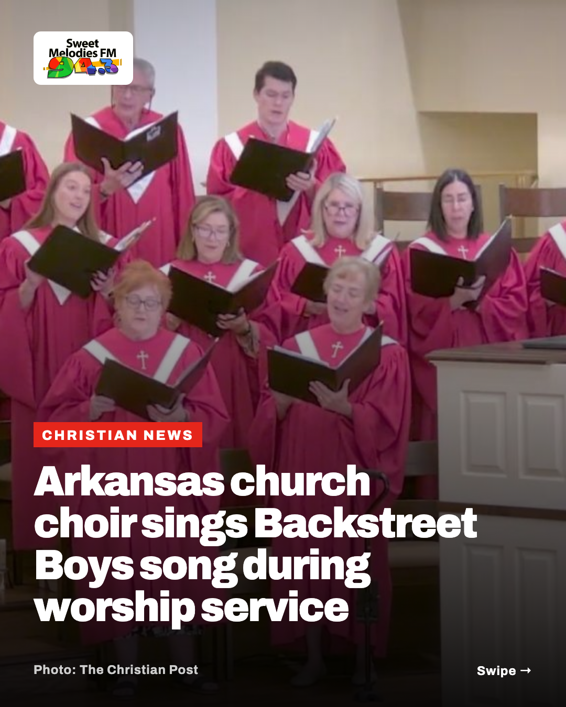
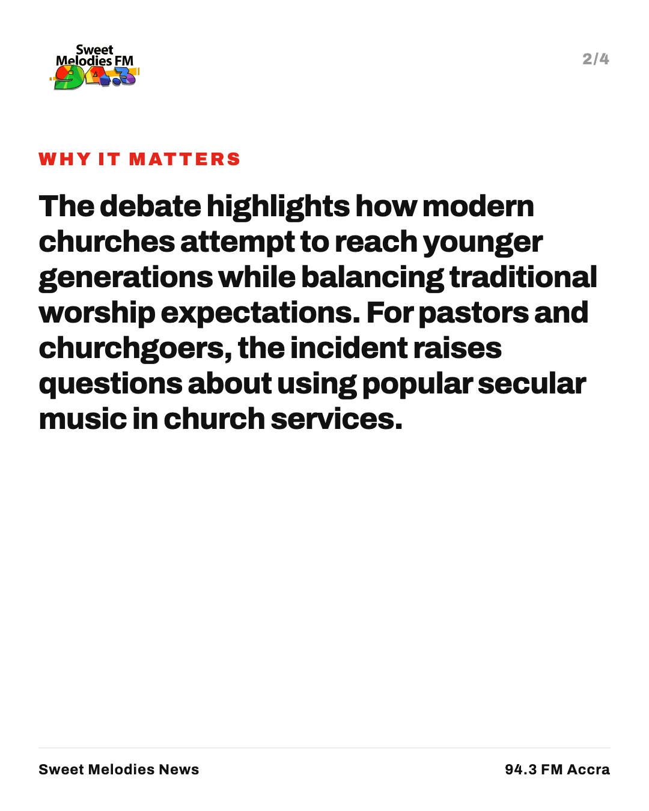
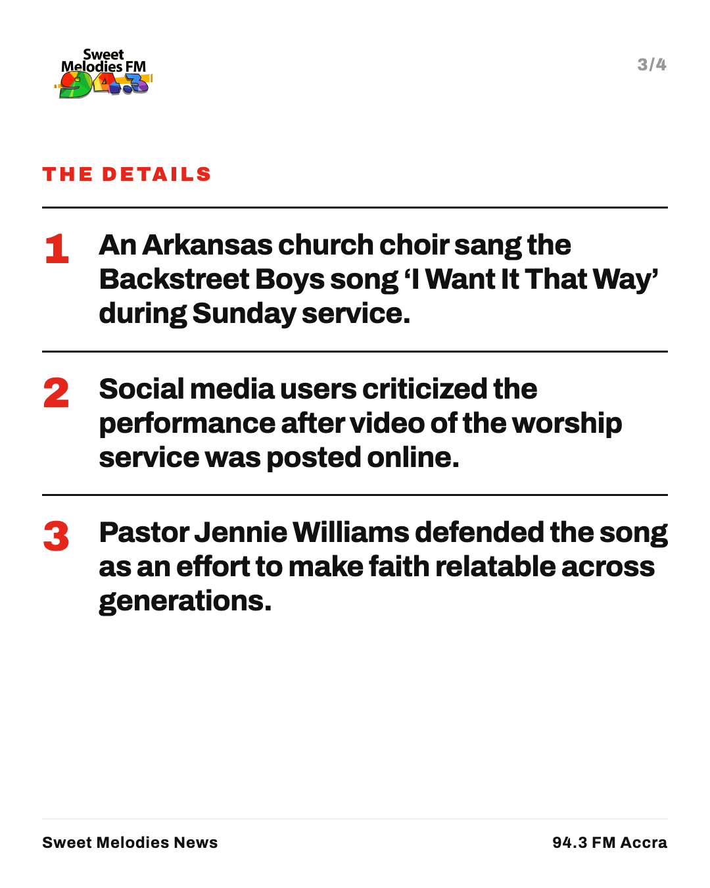

X
An Arkansas church choir sang the Backstreet Boys' 1999 hit 'I Want It That Way' during Sunday service, drawing social media debate over secular music in worship. #ChristianNews https://colabourers58-hue.github.io/sweet-melodies-news/story/arkansas-church-choir-sings-backstreet-boys-song-during-worship-servic/
Instagram
An Arkansas church choir performed the Backstreet Boys' hit 'I Want It That Way' during a Sunday service. The performance at Central United Methodist Church was part of a sermon series on millennials. Senior pastor Rev. Jennie Williams defended the song as an effort to reach the community and build intergenerational empathy. Full story: link in bio #ChristianNews #Worship #UnitedMethodist #ChurchLife #Music Photo: The Christian Post.
Facebook
A United Methodist church in Arkansas has sparked online discussion after its choir sang the Backstreet Boys' hit song 'I Want It That Way' during a Sunday worship service. Church leaders explained the song was part of a sermon series aimed at reaching millennials and making faith relatable. What are your thoughts on secular music in worship services? Read the full story on our website. https://colabourers58-hue.github.io/sweet-melodies-news/story/arkansas-church-choir-sings-backstreet-boys-song-during-worship-servic/
Whatsapp
*Arkansas church choir performs Backstreet Boys hit during Sunday service* Central United Methodist Church leaders defended the choice, saying it aimed to build empathy across generations. Read more: https://colabourers58-hue.github.io/sweet-melodies-news/story/arkansas-church-choir-sings-backstreet-boys-song-during-worship-servic/
Archaeologists find world’s oldest shipwreck off Turkish coast
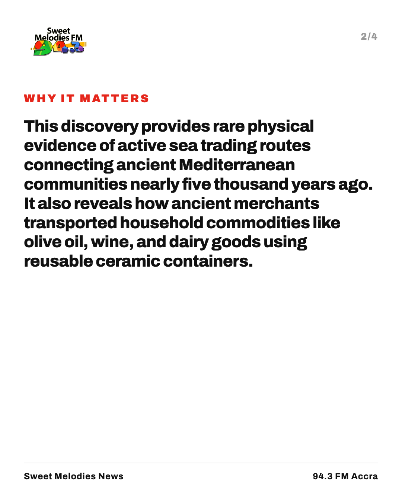
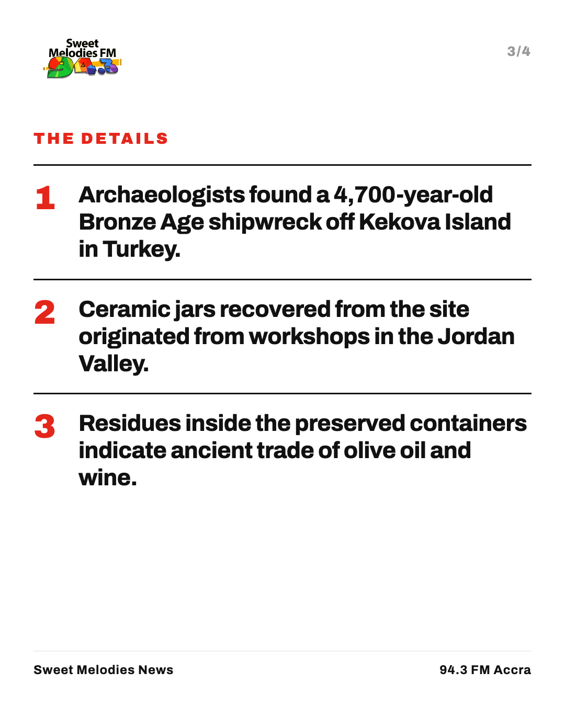

X
Archaeologists have discovered a 4,700-year-old shipwreck off the coast of Turkey, recovering ancient ceramic jars that reveal early Mediterranean trade routes. #Archaeology https://colabourers58-hue.github.io/sweet-melodies-news/story/archaeologists-find-worlds-oldest-shipwreck-off-turkish-coast/
Instagram
World's oldest shipwreck discovered off the Turkish coast. Divers recovered 4,700-year-old ceramic jars containing residues of olive oil and wine. Analysis shows the containers originated in the Jordan Valley, shedding light on Bronze Age trade. Full story: link in bio #archaeology #history #turkey #shipwreck #mediterranean Photo: Al Jazeera.
Facebook
Archaeologists off the coast of Turkey have uncovered what is believed to be the world's oldest shipwreck, dating back nearly 4,700 years. Divers recovered ancient ceramic jars that carried olive oil and wine across early Mediterranean trade routes. Read the full story on our website to discover what researchers found inside the ancient containers. https://colabourers58-hue.github.io/sweet-melodies-news/story/archaeologists-find-worlds-oldest-shipwreck-off-turkish-coast/
Whatsapp
*World's oldest shipwreck found in Turkey* Archaeologists have recovered 4,700-year-old ceramic jars revealing ancient trade routes across the Mediterranean. https://colabourers58-hue.github.io/sweet-melodies-news/story/archaeologists-find-worlds-oldest-shipwreck-off-turkish-coast/
Pope Leo XIV recovers in hospital after successful lung cancer surgery
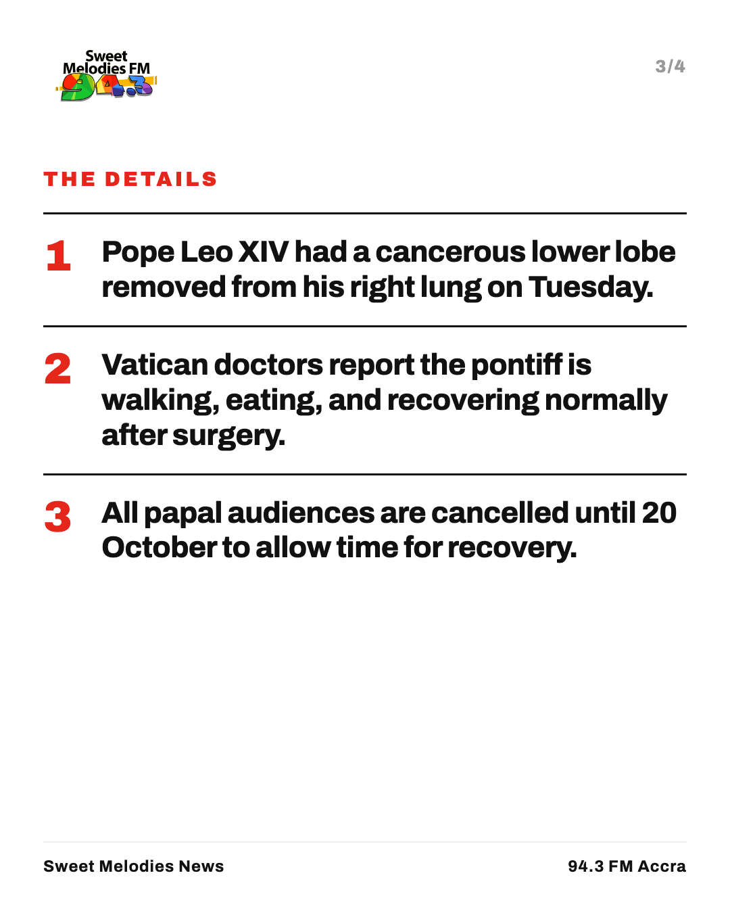

X
Pope Leo XIV is recovering in a Rome hospital following successful surgery to remove a cancerous lung lobe, Vatican updates confirm. https://colabourers58-hue.github.io/sweet-melodies-news/story/pope-leo-xiv-recovers-in-hospital-after-successful-lung-cancer-surgery/
Instagram
Pope Leo XIV is recovering in hospital after successful lung cancer surgery. Medical bulletins from the Vatican confirm the 71-year-old pontiff is walking and eating normally following the procedure in Rome. All public audiences remain suspended through 20 October. Full story: link in bio #PopeLeo #Vatican #CatholicChurch #HealthNews #ChristianNews Photo: Al Jazeera.
Facebook
Pope Leo XIV is recovering well at Gemelli Hospital in Rome following a successful 90-minute operation to remove a cancerous lobe from his right lung. Doctors report that the 71-year-old pontiff is walking, eating regular meals, and doing breathing exercises. All papal audiences have been postponed until 20 October to support his full recovery. Read the complete story on our website. https://colabourers58-hue.github.io/sweet-melodies-news/story/pope-leo-xiv-recovers-in-hospital-after-successful-lung-cancer-surgery/
Whatsapp
*Pope Leo XIV Recovers After Successful Lung Surgery* The 71-year-old Catholic leader is walking and eating normally following an operation in Rome. Read the full update here: https://colabourers58-hue.github.io/sweet-melodies-news/story/pope-leo-xiv-recovers-in-hospital-after-successful-lung-cancer-surgery/
Ghana wins second UN Human Rights Council term with 173 votes

X
Ghana has been re-elected to the UN Human Rights Council with 173 votes for the 2027-2029 term, Foreign Affairs Minister Samuel Okudzeto Ablakwa confirmed. #Ghana https://colabourers58-hue.github.io/sweet-melodies-news/story/ghana-wins-second-un-human-rights-council-term-with-173-votes/
Instagram
Ghana wins a second term on the UN Human Rights Council with 173 votes. The three-year mandate will run from 2027 to 2029 following a vote by member states. Foreign Affairs Minister Samuel Okudzeto Ablakwa confirmed the election results on Wednesday. Full story: link in bio #Ghana #UNHRC #HumanRights #Diplomacy #Accra Photo: Adom News.
Facebook
Ghana has secured a second consecutive term on the United Nations Human Rights Council after winning 173 votes. Foreign Affairs Minister Samuel Okudzeto Ablakwa thanked UN member states for supporting the country's re-election for the 2027 to 2029 period. Read the full story on our website. https://colabourers58-hue.github.io/sweet-melodies-news/story/ghana-wins-second-un-human-rights-council-term-with-173-votes/
Whatsapp
*Ghana secures second term on UN Human Rights Council* Ghana received 173 votes to serve a three-year term from 2027 to 2029. Foreign Minister Samuel Okudzeto Ablakwa confirmed the election outcome. https://colabourers58-hue.github.io/sweet-melodies-news/story/ghana-wins-second-un-human-rights-council-term-with-173-votes/
Ghana beat Mauritius 7-0 to advance in 2028 Olympic qualifiers
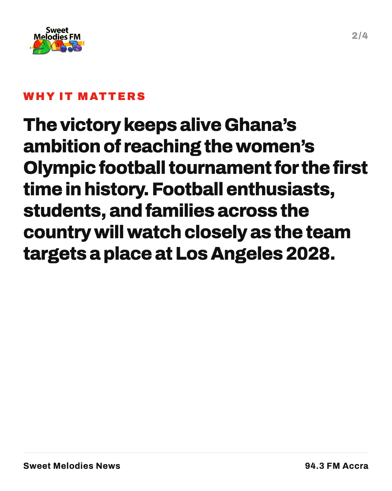
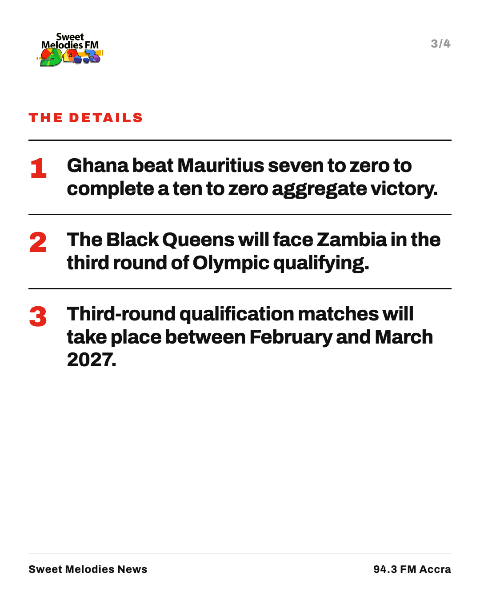

X
Ghana's Black Queens beat Mauritius 7-0 in Sekondi to complete a 10-0 aggregate win in the 2028 Olympic qualifiers. They will face Zambia in the next round. #BlackQueens https://colabourers58-hue.github.io/sweet-melodies-news/story/ghana-beat-mauritius-7-0-to-advance-in-2028-olympic-qualifiers/
Instagram
Ghana's Black Queens advance in the 2028 Olympic qualifiers after a 7-0 win over Mauritius. The home victory in Sekondi seals a 10-0 aggregate triumph over two legs. Ghana will meet Zambia in the third round early in 2027. Full story: link in bio #BlackQueens #GhanaFootball #LA2028 #OlympicQualifiers Photo: 3News.
Facebook
Ghana's senior women's football team defeated Mauritius 7-0 on Tuesday to secure a 10-0 aggregate victory in the 2028 Olympic qualifiers. The Black Queens now advance to face Zambia in a two-legged third-round tie in early 2027. Read the full match report and coach reaction on our website. https://colabourers58-hue.github.io/sweet-melodies-news/story/ghana-beat-mauritius-7-0-to-advance-in-2028-olympic-qualifiers/
Whatsapp
*Black Queens advance in 2028 Olympic qualifiers* Ghana beat Mauritius 7-0 in Sekondi to complete a 10-0 aggregate win. The national team will face Zambia in the third round in early 2027. https://colabourers58-hue.github.io/sweet-melodies-news/story/ghana-beat-mauritius-7-0-to-advance-in-2028-olympic-qualifiers/